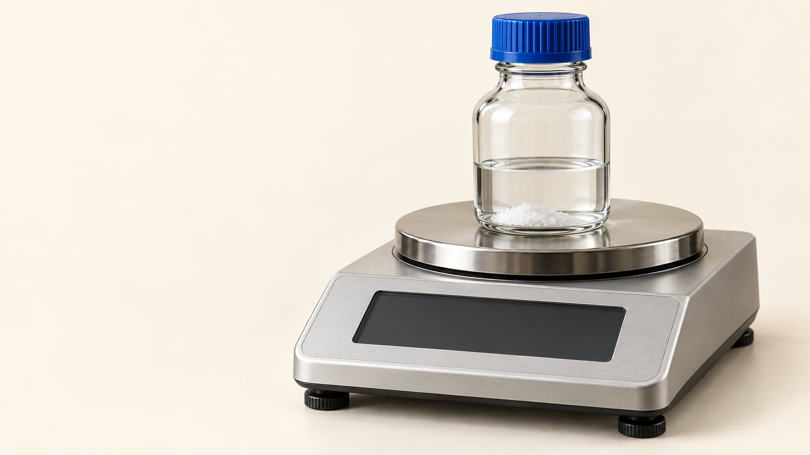
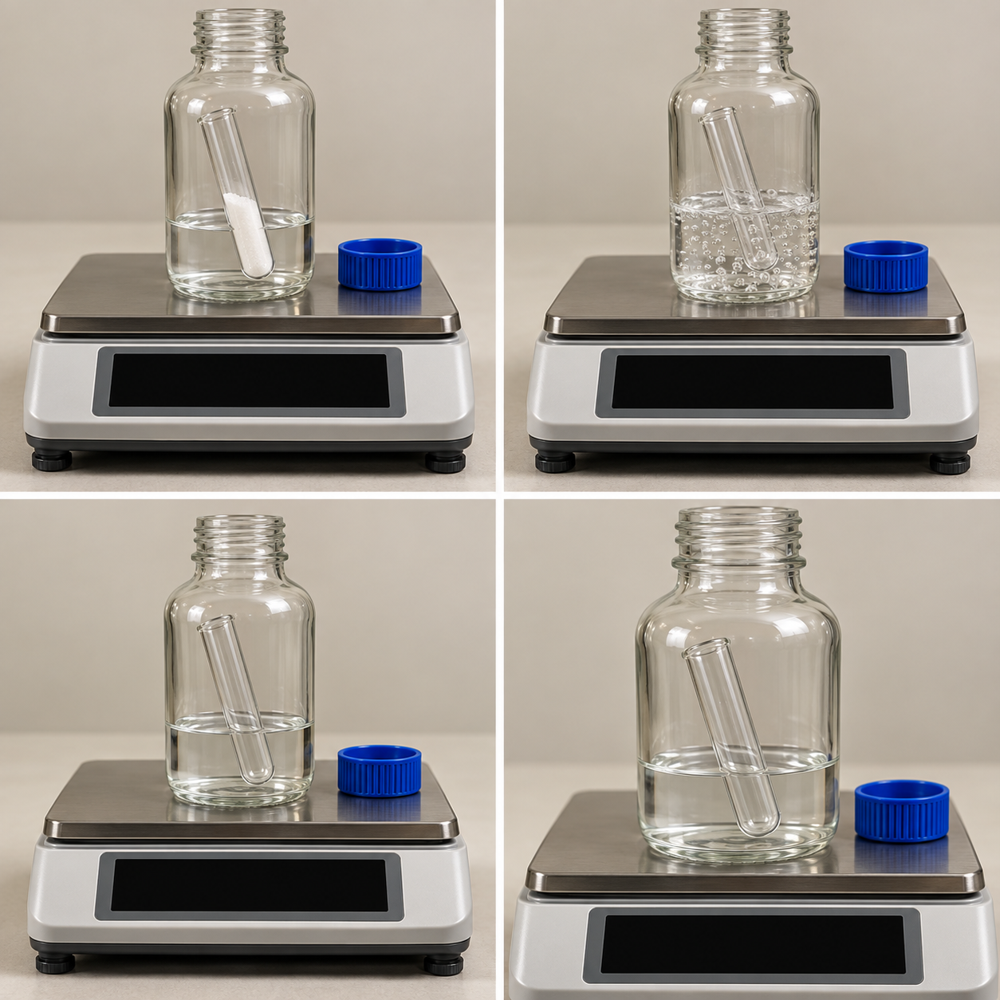
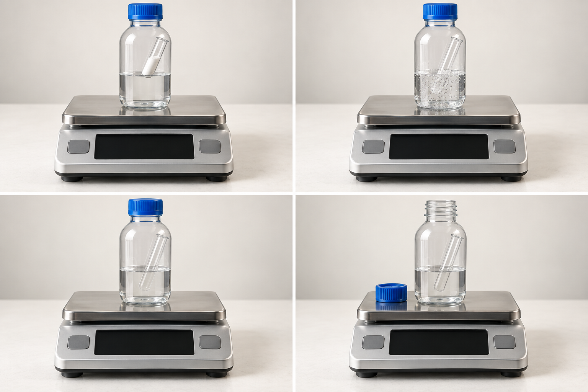
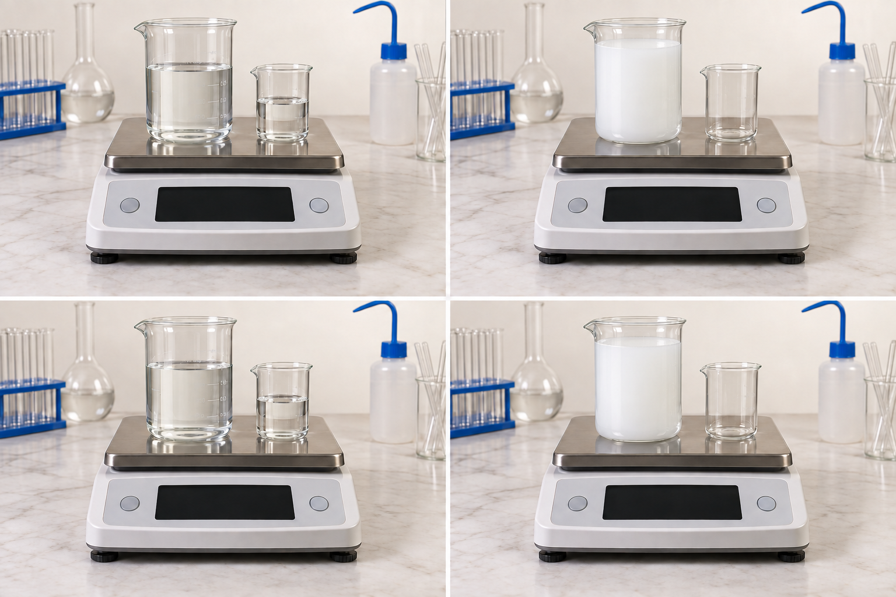
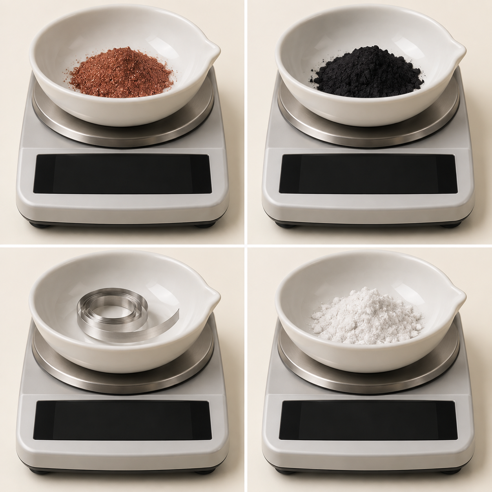

化学変化と 質量

混ぜたら、質量が減った

炭酸水素ナトリウムとうすい塩酸を混ぜると、泡が出た。
142.8 g → 142.1 g。量った質量が0.7 g減った。
物質そのものが、消えたのだろうか
質量保存の法則では、物質全体の質量は変わらない。
では、量っていない場所へ何かが移ったのでは？
減った0.7 gは、どこへ行った？

泡として出た二酸化炭素が、容器の外へ出た。
減ったのは、外へ出た気体の質量。
外へ出さずに、もう一度量る

同じ反応を、ふたを閉めた容器の中で起こす。
反応後も142.8 g。気体も容器の中に残る。
全体に含めれば、質量は同じ
容器に残った分と、外へ出た分を合わせる。
化学変化の前後で、物質全体の質量は変わらない。
白い沈殿ができたときは？

硫酸と水酸化バリウム水溶液を混ぜると、白い沈殿ができる。
気体は出ない。容器も含めて同じ範囲を量ると、質量は同じ。
銅は、加熱すると重くなる

赤色の銅が、黒い酸化銅に変わった。
物質の質量は0.80 g → 1.00 g。0.20 g増えた。
増えた0.20 gは、何の質量？
空気中の酸素が、銅と結びついた。
増えた質量 ＝ 結びついた酸素の質量。
増減を見たら、「出入り」を考える
減った：量った範囲から、物質が出ていった。
増えた：量った範囲へ、物質が入ってきた。
出入りした分も含めれば、全体の質量は保存される。
何度も加熱すると、いつまで増える？
加熱を繰り返すと、質量はしだいに増える。
やがて1.00 gで一定になる。
銅が十分に酸素と反応すると、それ以上は増えない。
酸素の質量は、引き算で求める
| 反応した銅 | できた酸化銅 | 結びついた酸素 |
|---|---|---|
| 0.80 | 1.00 | ？ |
| 1.20 | 1.50 | ？ |
| 2.00 | 2.50 | ？ |
| 反応した銅 | できた酸化銅 | 結びついた酸素 |
|---|---|---|
| 0.80 | 1.00 | 0.20 |
| 1.20 | 1.50 | ？ |
| 2.00 | 2.50 | ？ |
| 反応した銅 | できた酸化銅 | 結びついた酸素 |
|---|---|---|
| 0.80 | 1.00 | 0.20 |
| 1.20 | 1.50 | 0.30 |
| 2.00 | 2.50 | ？ |
| 反応した銅 | できた酸化銅 | 結びついた酸素 |
|---|---|---|
| 0.80 | 1.00 | 0.20 |
| 1.20 | 1.50 | 0.30 |
| 2.00 | 2.50 | 0.50 |
1.00 − 0.80 ＝ 0.20 g
1.50 − 1.20 ＝ 0.30 g
2.50 − 2.00 ＝ 0.50 g
まず、横軸と縦軸を読む
横軸：反応した銅の質量。単位はg。
縦軸：結びついた酸素の質量。単位はg。
横から進み、点で曲がって、縦へ
横軸の1.20 gから、上へ進む。
グラフの点から左へ進むと、0.30 g。
銅1.20 gに、酸素0.30 gが結びつく。
銅が2倍なら、酸素も2倍
銅の量が増えると、結びつく酸素の量も増える。
原点を通る直線になる。2つの質量は比例する。
小数の比を、整数の比に直す
両方を10倍する。1.2：0.3 → 12：3。
両方を3で割る。12：3 → 4：1。
4：1とは、どういう意味？
銅4 gと酸素1 gが、過不足なく結びつく。
できる酸化銅は5 g。銅：酸素：酸化銅 ＝ 4：1：5。
銅2.8 gなら、酸素は何g？
4に当たる銅が2.8 g。1に当たる酸素は2.8 ÷ 4。
酸素0.7 g。できる酸化銅は3.5 g。
マグネシウムでも、増えた分は酸素
Mg 0.60 gから、酸化Mg 1.00 gができた。
酸素は1.00 − 0.60 ＝ 0.40 g。
Mg：酸素は、3：2
Mg 0.60 gに、酸素0.40 gが結びつく。
0.6：0.4 ＝ 6：4 ＝ 3：2。
同じ金属の質量で、比べる
金属が0.60 gのとき、銅には酸素0.15 g、Mgには0.40 g。
同じ質量なら、Mgの方が多くの酸素と結びつく。
縦軸が変わると、読む比も変わる
酸素だけの質量を読むなら、銅：酸素 ＝ 4：1。
酸化銅全体の質量を読むなら、銅：酸化銅 ＝ 4：5。
反応式の係数を、そのまま質量比にしない
2：1：2は、化学反応式が表す個数の比。
銅：酸素：酸化銅の質量比は、4：1：5。
酸化Mg3.0 gのうち、Mgは何g？
Mg：酸素：酸化Mg ＝ 3：2：5。全体を5として考える。
Mgは1.8 g、酸素は1.2 g。足すと3.0 g。
酸素が足りなければ、銅が余る
銅3.2 gと酸素0.6 g。酸素0.6 gに必要な銅は2.4 g。
銅は3.2 − 2.4 ＝ 0.8 g余る。
余った銅も、全体に含める
できた酸化銅は、2.4 ＋ 0.6 ＝ 3.0 g。
酸化銅3.0 g ＋ 余った銅0.8 g ＝ 3.8 g。全体は同じ。
Mgを増やしても、気体が増えなくなる
同じ量の塩酸に加えるMgを増やすと、水素は増える。
あるところから、グラフが横ばいになる。
折れ曲がる前と後で、何が違う？
折れ曲がる前：Mgがすべて反応し、塩酸は残っている。
折れ曲がった後：塩酸が使い切られ、Mgが余る。
同じ濃度の塩酸を2倍にすると？
塩酸12 cm³では、反応できるMgの量に限りがある。
塩酸24 cm³なら、反応できるMgも水素の最大量も2倍。
質量の変化は、この3つで考える
何を量った？ ─ 容器と物質、どこまでを含むか。
何が出入りした？ ─ 増えた分・減った分の正体。
何対何で反応する？ ─ グラフの軸と、比の順番。